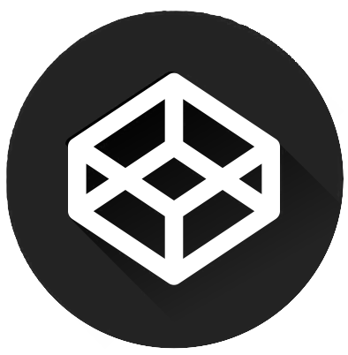
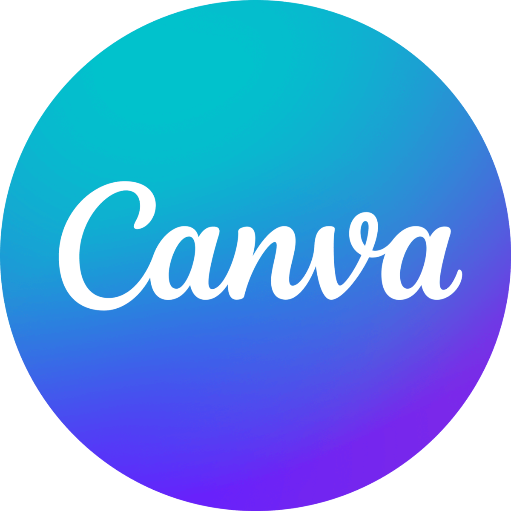
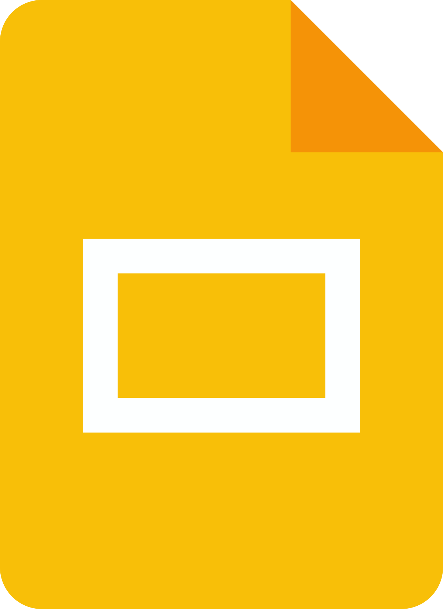
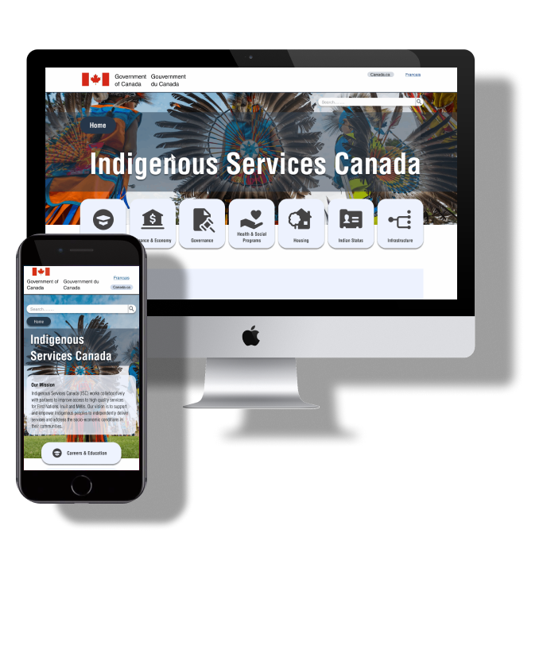
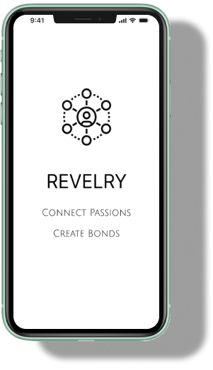
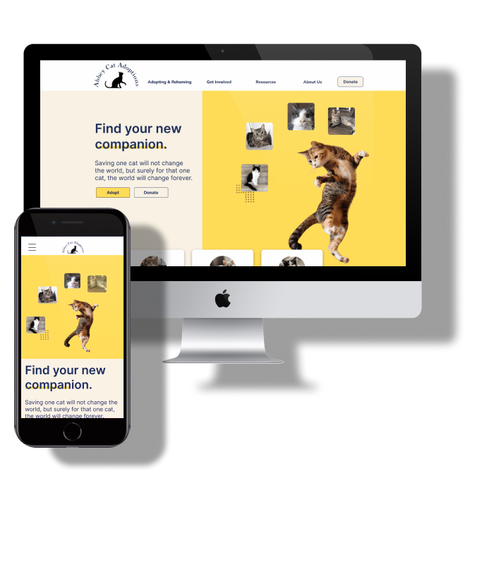

A passionate UX/UI designer, visual designer and UX researcher dedicated to crafting digital experiences that are not just visually appealing, but also deeply empathetic and inclusive. Molly’s journey in design is fueled by creating opportunities to enhance lives and bridge gaps.
With a focus on accessibility and inclusivity, she thrives on solving complex user problems. She believes that every individual, regardless of their abilities, deserves seamless and empowering digital interactions.
When Molly is not immersed in research and wireframes, you can find her reading fantasy novels or enjoying the outdoors with her Labrador Nyx!
Skills
UX Design
User Experience Design
Accessible Design
User Flows
User personas & User Scenario
UI Design
User Interface Design
Aesthetics & Branding
Colour Theory
Typography
Wireframing
Visual Design
Interaction Design
Prototyping
UX Research
Data Synthesis & Analysis
Survey Creation
User Research
Usability Testing
Personal Skills
Communication
Collaboration
Problem Solving
Empathy
Project Management
Tools



Case Studies

Indigenous Services Canada Redesign Project
This is a redesign project for the Indigenous Services Canada website. Through user testing and iterations a reimagined style guide and High Fidelity Prototype was actualized for a UI redesign. (School Project)
Revelry Club Connection App
Revelry is a mobile social networking app that simplifies the process of discovering like-minded individuals and facilitates meaningful social interactions both online and in person.


Abbey Cats Adoption Redesign Project
This redesign project focused on implementing a modern and responsive design to ensure seamless accessibility across various devices, ultimately facilitating users to navigate the website effortlessly, making the adoption process more accessible and rewarding.
 1.png)